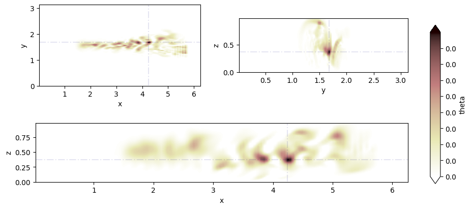

import pyutils.plot_utils as plt_utils
from turb.lesgo_utils import lesgo_data
from matplotlib import cm, colors
import matplotlib.pyplot as plt
import numpy as np
fig_dir = r'/home/zyou6474/Projects/ERI/notebooks/figures'
job_mark = 'steady_forward_'
from datetime import datetime
date_mark = datetime.today().strftime('%Y-%m-%d')
---------------------------------------------------------------------------
ModuleNotFoundError Traceback (most recent call last)
Cell In[1], line 1
----> 1 import pyutils.plot_utils as plt_utils
2 from turb.lesgo_utils import lesgo_data
3 from matplotlib import cm, colors
ModuleNotFoundError: No module named 'pyutils'
Initial condition of Steady source#
IC is all zero and source is constant gaussian impulse at different location in x direction. (Select the IC to be zero because magnitude of source will be dependent on the time scale of CFD, so that in order to have a better understanding of how the plume evolve, it would be better to only introduce a steady source.)
root_dir = '/home/zyou6474/tasks/steady_channel_flow'
dims = [128, 128, 64]
domain = [2*np.pi, np.pi, 1]
tspan = 3000
ldata = lesgo_data(domain, dims, root_dir, ntheta=3)
ldata.set_adjoint(False, fmt_ntheta='%.3i')
ldata.gaussian_field(fieldname = 'source', nk=1, source_point = [np.pi*1/3, np.pi/2, 1/2], gen_fig=False, variance=1e-1)
ldata.gaussian_field(fieldname = 'source', nk=2, source_point = [np.pi*1/2, np.pi/2, 1/2], gen_fig=False, variance=1e-1)
ldata.gaussian_field(fieldname = 'source', nk=3, source_point = [np.pi*2/3, np.pi/2, 1/2], gen_fig=True, variance=1e-1)
write data into /home/zyou6474/tasks/steady_channel_flow/inputs/source.001
write data into /home/zyou6474/tasks/steady_channel_flow/inputs/source.002
write data into /home/zyou6474/tasks/steady_channel_flow/inputs/source.003
((<Figure size 800x400 with 4 Axes>,
[<Axes: xlabel='x', ylabel='y'>,
<Axes: xlabel='x', ylabel='z'>,
<Axes: xlabel='y', ylabel='z'>]),
array([[[7.09756484e-152, 9.03850886e-152, 1.16010681e-151, ...,
1.29768707e-150, 4.07580862e-151, 1.19500223e-151],
[3.15710824e-150, 4.02047060e-150, 5.16033715e-150, ...,
5.77231577e-149, 1.81298364e-149, 5.31555747e-150],
[1.32223298e-148, 1.68381899e-148, 2.16120812e-148, ...,
2.41751175e-147, 7.59298251e-148, 2.22621616e-148],
...,
[1.32223298e-148, 1.68381899e-148, 2.16120812e-148, ...,
2.41751175e-147, 7.59298251e-148, 2.22621616e-148],
[3.15710824e-150, 4.02047060e-150, 5.16033715e-150, ...,
5.77231577e-149, 1.81298364e-149, 5.31555747e-150],
[7.09756484e-152, 9.03850886e-152, 1.16010681e-151, ...,
1.29768707e-150, 4.07580862e-151, 1.19500223e-151]],
[[1.62694994e-147, 2.07186574e-147, 2.65927221e-147, ...,
2.97464264e-146, 9.34283340e-147, 2.73926177e-147],
[7.23692868e-146, 9.21598399e-146, 1.18288602e-145, ...,
1.32316773e-144, 4.15583893e-145, 1.21846663e-145],
[3.03090836e-144, 3.85975933e-144, 4.95406171e-144, ...,
5.54157755e-143, 1.74051280e-143, 5.10307737e-144],
...,
[3.03090836e-144, 3.85975933e-144, 4.95406171e-144, ...,
5.54157755e-143, 1.74051280e-143, 5.10307737e-144],
[7.23692868e-146, 9.21598399e-146, 1.18288602e-145, ...,
1.32316773e-144, 4.15583893e-145, 1.21846663e-145],
[1.62694994e-147, 2.07186574e-147, 2.65927221e-147, ...,
2.97464264e-146, 9.34283340e-147, 2.73926177e-147]],
[[2.93084368e-143, 3.73233034e-143, 4.79050460e-143, ...,
5.35862376e-142, 1.68305020e-142, 4.93460055e-143],
[1.30368527e-141, 1.66019911e-141, 2.13089163e-141, ...,
2.38359995e-140, 7.48647145e-141, 2.19498777e-141],
[5.45998276e-140, 6.95310345e-140, 8.92441746e-140, ...,
9.98278876e-139, 3.13541973e-139, 9.19285941e-140],
...,
[5.45998276e-140, 6.95310345e-140, 8.92441746e-140, ...,
9.98278876e-139, 3.13541973e-139, 9.19285941e-140],
[1.30368527e-141, 1.66019911e-141, 2.13089163e-141, ...,
2.38359995e-140, 7.48647145e-141, 2.19498777e-141],
[2.93084368e-143, 3.73233034e-143, 4.79050460e-143, ...,
5.35862376e-142, 1.68305020e-142, 4.93460055e-143]],
...,
[[0.00000000e+000, 0.00000000e+000, 0.00000000e+000, ...,
0.00000000e+000, 0.00000000e+000, 0.00000000e+000],
[0.00000000e+000, 0.00000000e+000, 0.00000000e+000, ...,
0.00000000e+000, 0.00000000e+000, 0.00000000e+000],
[0.00000000e+000, 0.00000000e+000, 0.00000000e+000, ...,
0.00000000e+000, 0.00000000e+000, 0.00000000e+000],
...,
[0.00000000e+000, 0.00000000e+000, 0.00000000e+000, ...,
0.00000000e+000, 0.00000000e+000, 0.00000000e+000],
[0.00000000e+000, 0.00000000e+000, 0.00000000e+000, ...,
0.00000000e+000, 0.00000000e+000, 0.00000000e+000],
[0.00000000e+000, 0.00000000e+000, 0.00000000e+000, ...,
0.00000000e+000, 0.00000000e+000, 0.00000000e+000]],
[[0.00000000e+000, 0.00000000e+000, 0.00000000e+000, ...,
0.00000000e+000, 0.00000000e+000, 0.00000000e+000],
[0.00000000e+000, 0.00000000e+000, 0.00000000e+000, ...,
0.00000000e+000, 0.00000000e+000, 0.00000000e+000],
[0.00000000e+000, 0.00000000e+000, 0.00000000e+000, ...,
0.00000000e+000, 0.00000000e+000, 0.00000000e+000],
...,
[0.00000000e+000, 0.00000000e+000, 0.00000000e+000, ...,
0.00000000e+000, 0.00000000e+000, 0.00000000e+000],
[0.00000000e+000, 0.00000000e+000, 0.00000000e+000, ...,
0.00000000e+000, 0.00000000e+000, 0.00000000e+000],
[0.00000000e+000, 0.00000000e+000, 0.00000000e+000, ...,
0.00000000e+000, 0.00000000e+000, 0.00000000e+000]],
[[0.00000000e+000, 0.00000000e+000, 0.00000000e+000, ...,
0.00000000e+000, 0.00000000e+000, 0.00000000e+000],
[0.00000000e+000, 0.00000000e+000, 0.00000000e+000, ...,
0.00000000e+000, 0.00000000e+000, 0.00000000e+000],
[0.00000000e+000, 0.00000000e+000, 0.00000000e+000, ...,
0.00000000e+000, 0.00000000e+000, 0.00000000e+000],
...,
[0.00000000e+000, 0.00000000e+000, 0.00000000e+000, ...,
0.00000000e+000, 0.00000000e+000, 0.00000000e+000],
[0.00000000e+000, 0.00000000e+000, 0.00000000e+000, ...,
0.00000000e+000, 0.00000000e+000, 0.00000000e+000],
[0.00000000e+000, 0.00000000e+000, 0.00000000e+000, ...,
0.00000000e+000, 0.00000000e+000, 0.00000000e+000]]]))
ldata.constant_field(fieldname = 'theta.IC', nk=1, gen_fig=False)
ldata.constant_field(fieldname = 'theta.IC', nk=2, gen_fig=False)
ldata.constant_field(fieldname = 'theta.IC', nk=3, gen_fig=False)
write data into /home/zyou6474/tasks/steady_channel_flow/inputs/theta.IC.001
write data into /home/zyou6474/tasks/steady_channel_flow/inputs/theta.IC.002
write data into /home/zyou6474/tasks/steady_channel_flow/inputs/theta.IC.003
array([[[0., 0., 0., ..., 0., 0., 0.],
[0., 0., 0., ..., 0., 0., 0.],
[0., 0., 0., ..., 0., 0., 0.],
...,
[0., 0., 0., ..., 0., 0., 0.],
[0., 0., 0., ..., 0., 0., 0.],
[0., 0., 0., ..., 0., 0., 0.]],
[[0., 0., 0., ..., 0., 0., 0.],
[0., 0., 0., ..., 0., 0., 0.],
[0., 0., 0., ..., 0., 0., 0.],
...,
[0., 0., 0., ..., 0., 0., 0.],
[0., 0., 0., ..., 0., 0., 0.],
[0., 0., 0., ..., 0., 0., 0.]],
[[0., 0., 0., ..., 0., 0., 0.],
[0., 0., 0., ..., 0., 0., 0.],
[0., 0., 0., ..., 0., 0., 0.],
...,
[0., 0., 0., ..., 0., 0., 0.],
[0., 0., 0., ..., 0., 0., 0.],
[0., 0., 0., ..., 0., 0., 0.]],
...,
[[0., 0., 0., ..., 0., 0., 0.],
[0., 0., 0., ..., 0., 0., 0.],
[0., 0., 0., ..., 0., 0., 0.],
...,
[0., 0., 0., ..., 0., 0., 0.],
[0., 0., 0., ..., 0., 0., 0.],
[0., 0., 0., ..., 0., 0., 0.]],
[[0., 0., 0., ..., 0., 0., 0.],
[0., 0., 0., ..., 0., 0., 0.],
[0., 0., 0., ..., 0., 0., 0.],
...,
[0., 0., 0., ..., 0., 0., 0.],
[0., 0., 0., ..., 0., 0., 0.],
[0., 0., 0., ..., 0., 0., 0.]],
[[0., 0., 0., ..., 0., 0., 0.],
[0., 0., 0., ..., 0., 0., 0.],
[0., 0., 0., ..., 0., 0., 0.],
...,
[0., 0., 0., ..., 0., 0., 0.],
[0., 0., 0., ..., 0., 0., 0.],
[0., 0., 0., ..., 0., 0., 0.]]])
t_ind = tspan
k_ind = 1
var_ind = 'theta'
timestep = np.linspace(0, tspan, 51)
ldata.read_data(t_ind)
fig, ax = plt_utils.contour_channel(ldata.coords, ldata.data[var_ind][k_ind])

plt_utils.generate_gif(timestep, ldata, fig_dir, var_ind, k_ind, job_mark+date_mark, vmin=0, vmax=5e-2, norm = colors.Normalize, levels=51, tick_fmt='%.2f')
timestep[0] += 10
plt_utils.generate_gif(timestep, ldata, fig_dir, var_ind, k_ind, job_mark+date_mark+'_lognorm', vmin=1e-5, vmax=1e0, norm = colors.LogNorm, levels=101, tick_fmt='%.0e')
/home/zyou6474/.venv/lib/python3.10/site-packages/python_utils-0.1.0-py3.10.egg/pyutils/plot_utils.py:149: UserWarning: Log scale: values of z <= 0 have been masked
/home/zyou6474/.venv/lib/python3.10/site-packages/python_utils-0.1.0-py3.10.egg/pyutils/plot_utils.py:159: UserWarning: Log scale: values of z <= 0 have been masked
/home/zyou6474/.venv/lib/python3.10/site-packages/python_utils-0.1.0-py3.10.egg/pyutils/plot_utils.py:169: UserWarning: Log scale: values of z <= 0 have been masked
sx = (5/3*np.pi, 5/3*np.pi, 5/3*np.pi)
sy = (1/2*np.pi, 1/2*np.pi, 1/2*np.pi)
sz = (1/2, 1/3, 2/3)
sensor_locs = (sx, sy, sz)
tt = np.arange(0, 5000, 100)
ldata.sensor_measurements(sensor_locs, tt, vmin=1e-8, vmax=1e-1, norm=colors.LogNorm,
gif_fname='/home/zyou6474/Projects/ERI/notebooks/figures/steady_forward_3sensors_lognorm')
/home/zyou6474/.venv/lib/python3.10/site-packages/python_utils-0.1.0-py3.10.egg/turb/lesgo_utils.py:361: UserWarning: Log scale: values of z <= 0 have been masked
/home/zyou6474/.venv/lib/python3.10/site-packages/matplotlib/contour.py:1459: UserWarning: Warning: converting a masked element to nan.
self.zmin = float(z.min())
---------------------------------------------------------------------------
ValueError Traceback (most recent call last)
Cell In[8], line 7
5 sensor_locs = (sx, sy, sz)
6 tt = np.arange(0, 5000, 100)
----> 7 ldata.sensor_measurements(sensor_locs, tt, vmin=1e-8, vmax=1e-1, norm=colors.LogNorm,
8 gif_fname='/home/zyou6474/Projects/ERI/notebooks/figures/steady_forward_3sensors_lognorm')
File ~/.venv/lib/python3.10/site-packages/python_utils-0.1.0-py3.10.egg/turb/lesgo_utils.py:427, in lesgo_data.sensor_measurements(self, sensor_locs, tt, **kwargs)
424 self.data['obs'][ns, nT, t_ind] = self.data['theta'][nT, xi[ns], yi[ns], zi[ns]]
426 if kwargs['gen_gif']:
--> 427 fig, ax = self.channel_obs(**kwargs)
428 # create file name and append it to a list
429 filename = gif_dir + f'/%.5i.png' % t
File ~/.venv/lib/python3.10/site-packages/python_utils-0.1.0-py3.10.egg/turb/lesgo_utils.py:361, in lesgo_data.channel_obs(self, **kwargs)
358 fig, axes = plt.subplots(self.ntheta+1, 1, figsize=kwargs['figsize'], dpi = kwargs['dpi'])
359 axes = axes.flatten()
--> 361 ct1 = axes[0].contourf(self.coords[0], self.coords[2], self.data['theta'][kwargs['nk'], :, kwargs['y_ind'], :].T, levels=kwargs['levels'],
362 norm=kwargs['norm'](vmin=kwargs['vmin'], vmax=kwargs['vmax'], clip=kwargs['clip']), cmap=kwargs['cmap'],
363 )
364 axes[0].scatter(self.s_locs[0], self.s_locs[-1], marker='o', color='black', s = 1)
365 axes[0].scatter(self.source_coords[self.nk, 0], self.source_coords[self.nk, 2], marker='x', color='red', alpha=0.7, )
File ~/.venv/lib/python3.10/site-packages/matplotlib/__init__.py:1442, in _preprocess_data.<locals>.inner(ax, data, *args, **kwargs)
1439 @functools.wraps(func)
1440 def inner(ax, *args, data=None, **kwargs):
1441 if data is None:
-> 1442 return func(ax, *map(sanitize_sequence, args), **kwargs)
1444 bound = new_sig.bind(ax, *args, **kwargs)
1445 auto_label = (bound.arguments.get(label_namer)
1446 or bound.kwargs.get(label_namer))
File ~/.venv/lib/python3.10/site-packages/matplotlib/axes/_axes.py:6467, in Axes.contourf(self, *args, **kwargs)
6458 """
6459 Plot filled contours.
6460
(...)
6464 %(contour_doc)s
6465 """
6466 kwargs['filled'] = True
-> 6467 contours = mcontour.QuadContourSet(self, *args, **kwargs)
6468 self._request_autoscale_view()
6469 return contours
File ~/.venv/lib/python3.10/site-packages/matplotlib/contour.py:769, in ContourSet.__init__(self, ax, levels, filled, linewidths, linestyles, hatches, alpha, origin, extent, cmap, colors, norm, vmin, vmax, extend, antialiased, nchunk, locator, transform, negative_linestyles, *args, **kwargs)
765 if self.negative_linestyles is None:
766 self.negative_linestyles = \
767 mpl.rcParams['contour.negative_linestyle']
--> 769 kwargs = self._process_args(*args, **kwargs)
770 self._process_levels()
772 self._extend_min = self.extend in ['min', 'both']
File ~/.venv/lib/python3.10/site-packages/matplotlib/contour.py:1411, in QuadContourSet._process_args(self, corner_mask, algorithm, *args, **kwargs)
1408 corner_mask = mpl.rcParams['contour.corner_mask']
1409 self._corner_mask = corner_mask
-> 1411 x, y, z = self._contour_args(args, kwargs)
1413 contour_generator = contourpy.contour_generator(
1414 x, y, z, name=self._algorithm, corner_mask=self._corner_mask,
1415 line_type=contourpy.LineType.SeparateCode,
1416 fill_type=contourpy.FillType.OuterCode,
1417 chunk_size=self.nchunk)
1419 t = self.get_transform()
File ~/.venv/lib/python3.10/site-packages/matplotlib/contour.py:1460, in QuadContourSet._contour_args(self, args, kwargs)
1458 _api.warn_external('Log scale: values of z <= 0 have been masked')
1459 self.zmin = float(z.min())
-> 1460 self._process_contour_level_args(args, z.dtype)
1461 return (x, y, z)
File ~/.venv/lib/python3.10/site-packages/matplotlib/contour.py:1137, in ContourSet._process_contour_level_args(self, args, z_dtype)
1135 levels_arg = self.levels
1136 if isinstance(levels_arg, Integral):
-> 1137 self.levels = self._autolev(levels_arg)
1138 else:
1139 self.levels = np.asarray(levels_arg, np.float64)
File ~/.venv/lib/python3.10/site-packages/matplotlib/contour.py:1097, in ContourSet._autolev(self, N)
1094 else:
1095 self.locator = ticker.MaxNLocator(N + 1, min_n_ticks=1)
-> 1097 lev = self.locator.tick_values(self.zmin, self.zmax)
1099 try:
1100 if self.locator._symmetric:
File ~/.venv/lib/python3.10/site-packages/matplotlib/ticker.py:2367, in LogLocator.tick_values(self, vmin, vmax)
2365 vmin, vmax = vmax, vmin
2366 log_vmin = math.log(vmin) / math.log(b)
-> 2367 log_vmax = math.log(vmax) / math.log(b)
2369 numdec = math.floor(log_vmax) - math.ceil(log_vmin)
2371 if isinstance(self._subs, str):
ValueError: math domain error
Sensor measurement could be illustrated in this figure.

Adjoint Field of Sensors#
adjoint_dir = '/home/zyou6474/tasks/adjoint_steady_channel_flow'
ldata.set_adjoint(True, adjoint_dir=adjoint_dir, fmt_ntheta='%.3i')
# Write np.roll to write IC files
ldata.sensor_init_(sensor_locs)
# ldata.sensor_field()
# ldata.sensor_field(field_func = ldata.constant_field, fieldname='theta.IC')